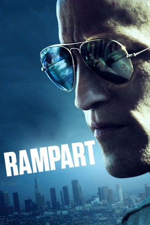

#1309 Rampart - Cop außer Kontrolle
Alternativ: Rampart
 
 IMDB-Wertung: 5.8 / 10
IMDB-Wertung: 5.8 / 10  Metascore: 70
Metascore: 70 
"Ich bin kein Rassist, ich hasse alle Menschen gleich." erklärt Officer Dave Brown dem Mann von Internal Affairs. Brown ist ein richtig mieser Typ. Er säuft im Dienst, wirft Pillen ein wie Schokodrops, droht, prügelt und bricht Gesetze, wie es ihm gerade passt. Aber als Cop hält er die Straßen von LA frei von kriminellem Ungeziefer, damit seine beiden Töchter und viele andere brave Bürger in Sicherheit leben können. So war es immer schon und das ist auch völlig ok - in seinen Augen. Doch eines verdammten Tages flimmern die Bilder, wie Brown einen Verdächtigen fast totschlägt, über alle TV-Sender. Eine der vielen Videokameras in der Stadt hat alles dokumentiert. Und was das krisengeschüttelte LA Police Department gerade gar nicht brauchen kann, ist ein prügelnder Cop ...
Jahr: 2011
Dauer: 108 Minuten
FSK: 16
Land: USA Studio: Millennium EntertainmentTonspuren: DTS - ,
Untertitel:
Auflösung: 1080p (1920x816) Größe: 6471 MB
Genre: Krimi, Drama
Regisseur: Oren Moverman
Drehbuch: James Ellroy, Oren Moverman
Soundtrack: Dickon Hinchliffe
Darsteller:
 Woody Harrelson als David Douglas Brown
Woody Harrelson als David Douglas Brown Jon Bernthal als Dan Morone
Jon Bernthal als Dan Morone- Stella Schnabel als Jane
 Jon Foster als Michael Whittaker
Jon Foster als Michael Whittaker Ben Foster als General Terry
Ben Foster als General Terry Ruben Garfias als Pharmacy Security Guard
Ruben Garfias als Pharmacy Security Guard- Deadlee als Pharmacy Punk
- Dominic Flores als Latino Detective
- Matt McTighe als 30-Year-Old Cop
 Cynthia Nixon als Barbara
Cynthia Nixon als Barbara Anne Heche als Catherine
Anne Heche als Catherine Brie Larson als Helen
Brie Larson als Helen- Sammy Boyarsky als Margaret
- Audra McDonald als Sarah
 Keith Woulard als Shondell Parmallee
Keith Woulard als Shondell Parmallee Steve Buscemi als Bill Blago
Steve Buscemi als Bill Blago Harriet Sansom Harris als Stacy Cranston
Harriet Sansom Harris als Stacy Cranston Robert Wisdom als Captain
Robert Wisdom als Captain Sigourney Weaver als Joan Confrey
Sigourney Weaver als Joan Confrey- Leonard Kelly-Young als Cal Woodward
 Robin Wright als Linda Fentress
Robin Wright als Linda Fentress Ned Beatty als Hartshorn
Ned Beatty als Hartshorn Don Creech als Head Shark Lawyer
Don Creech als Head Shark Lawyer- Chuti Tiu als Shark Lawyer #1
- Sophie Kargman als Helen's Girlfriend
 Francis Capra als Seize Chasco
Francis Capra als Seize Chasco Tim Russ als Command Staff Member #1
Tim Russ als Command Staff Member #1- Bryan Rasmussen als Command Staff Member #2
 Ice Cube als Kyle Timkins
Ice Cube als Kyle Timkins- William Paul Clark als Barbara's Boyfriend
- Rachel Ann Mullins als Dominatrix , uncredited
- Sal Velez Jr. als High Roller , uncredited
- Eric Womack als Reporter , uncredited
- Billy Hough als Piano Player
- Ashley Nikkole Thompson als Captain's Daughter
- Angelita Macias als Flamenco Dancer #1
- Assieh Ghassemi als Flamenco Dancer #2
- Mike Deldicobo als Singer
- Borislov Solakov als Guitar Player
- Jim O'Hagen als Hotel Concierge
- Bobby Cohen als Restaurant Patron , uncredited
- Alfonso Flores Jr. als Thug in casino , uncredited
Datei: X:\2011(N-Z)\Rampart - Cop außer Kontrolle (2011, FSK16, 1920x816).mkv seit 18.06.2015
Festplatte: HD 2011(G-Z)
 Es gibt insgesamt 132 Filme in der Gruppe '2011(N-Z)'
Es gibt insgesamt 132 Filme in der Gruppe '2011(N-Z)'